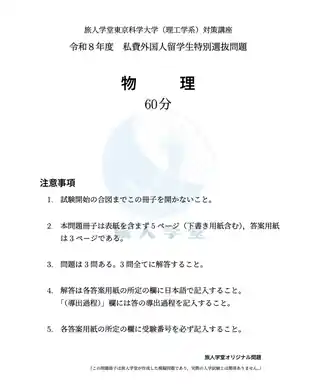
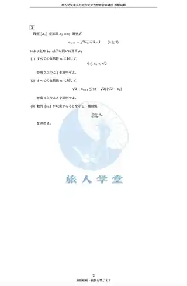
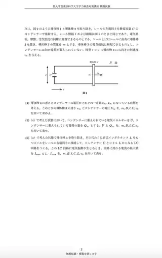
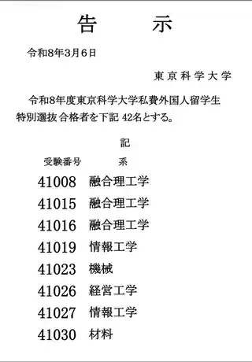
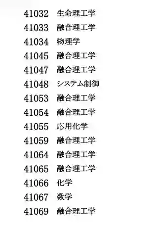
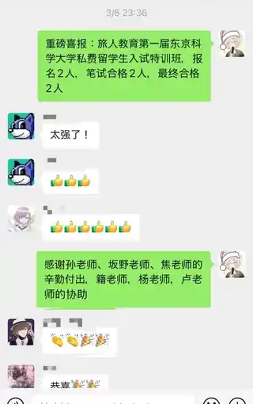

准备内容
先确认考试要求，再组织训练
不同大学、学部的校内考内容差异较大，课程以实际募集要项和历年出题为准。
01募集要项考试科目、资格条件、提交材料与日程
02笔试对策知识复习、题型演习、原创模拟题
03面试对策志望理由、专业理解、常见问题与模拟问答
2026 实际案例
东京科学大学（理工学系）
数理化笔试对策小班。以下为实际课程内容与结果。
2026 RESULT
2 名最终合格
报名 2 人，笔试合格 2 人，最终合格 2 人。
2报名
→2笔试合格
→2最终合格
笔试科目数学・物理・化学
教研资料原创模拟题、针对性演习
面试志望理由、专业理解、模拟问答
合格方向经营工学系・融合理工学系
实际资料
教研资料与合格记录
按照“教研资料 → 训练内容 → 合格结果”的顺序展示，避免把资料做成无差别截图墙。




20262 / 2最终合格
经营工学系・融合理工学系



01目标校分析募集要项、考试科目、历年出题与时间节点
02数理化训练知识复习、题型演习与原创模拟题
03模拟面试志望理由、专业理解与现场问答
东京科学大学为实际案例之一。其他大学与学部按照各自募集要项、笔试内容和面试要求安排。
适用范围
按学校、学部与考试方式确认
理工科笔试数学、物理、化学等目标校指定科目
文书与出愿志望理由、提交材料和时间节点
面试专业问题、志望理由与模拟问答
课程形式根据人数、学校和科目安排小班或个别指导
咨询目标校校内考
请提供学校、学部、考试科目、募集要项和预计考试时间。